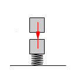
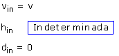
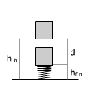
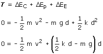
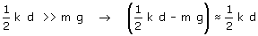

Compresión del muelle
Cambios de energía
 |
 |
 |
hfin = d + hin hfin - hin = -d El bloque baja tanto como se comprime el muelle |
|
|

Cálculo del trabajo
Durante el recorrido el bloque solo está sometido a la fuerza gravitatoria y elástica cuyos trabajos ya están contados como variación de energía potencial y elástica. Por tanto T = 0.
Aplicando el principio de Conservación:

Vamos a hacer una aproximación para simplificar la expresión:

Estamos suponiendo que la fuerza
media del muelle al comprimirse es mucho mayor que el peso.
Como no conocemos d no podemos comprobar si la aproximación es
correcta así que esto no es más que una hipótesis